Artículos de interés
Modelos para decidir y planes para ejecutar
¿Por qué no siempre hacemos lo que planeamos ni planeamos lo que hacemos?
No siempre ejecutamos lo que planeamos ni planeamos lo que ejecutamos. Los ciclos empresariales requieren de planificación y ejecución. La planificación se hace sobre un plan y la ejecución sobre un modelo.
Los modelos son simplificaciones selectivas de la realidad.
Hay dos clases de modelos:
- Los que sirven para soportar las decisiones son modelos predictivos.
- Los que se usan para administrar un determinado sistema con el fin de enfocarse en los aspectos más importantes del mismo son modelos de simulación.
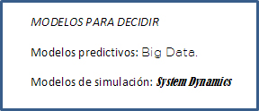
Los primeros son para hacer predicciones de algo que no puede ser influido, como el clima o el uso fraudulento de tarjetas de crédito. Estos modelos reúnen vastas cantidades de datos y los procesan estadísticamente, evitando así los sesgos que comúnmente afligen el juicio humano. Así, los agricultores saben qué sembrar y cuándo hacerlo y los banqueros pueden decidir cuánto y a quién prestar. Las empresas que han adoptado una toma de decisiones basada en el análisis de grandes bases de datos han ganado en productividad.
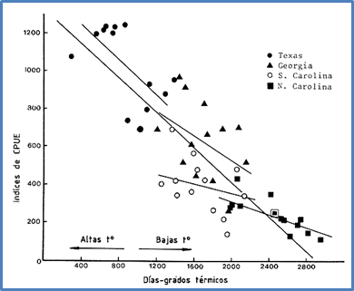
Big Data es más que una acumulación de datos. Es también la capacidad para extraer significado: es explorar a través de vastos océanos de números y encontrar el patrón escondido, la correlación inesperada o la conexión sorprendente.
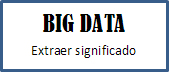
Los segundos tratan con cosas que sí pueden ser influidas con el propósito de ayudar a decidir dónde asignar prioridades y recursos para incrementar la probabilidad de obtener los resultados deseados. El objetivo de estos modelos no es predecir que va a pasar, sino hacer que las cosas sucedan, por ejemplo, cuándo lanzar una campaña publicitaria para impulsar las ventas o a qué precio vender para mantener el margen de ganancia.
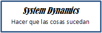
Según R.E. Shannon: "La simulación es el proceso de diseñar un modelo de un sistema real y llevar a término experiencias con él, con la finalidad de comprender su comportamiento y evaluar nuevas estrategias, dentro de los límites impuestos por un cierto criterio o un conjunto de ellos, para el funcionamiento del sistema".
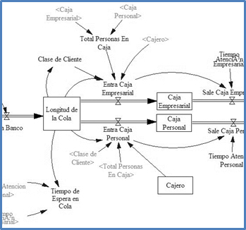
El Octagrama de Valor® es un modelo del segundo tipo que representa las actividades y procesos que realmente agregan valor a los recursos de una organización. Sirve como mapa mental para facilitar la toma de decisiones al hacer evidente dónde se requiere una intervención puntual para mejorar una actividad o la eficiencia de un proceso y sirve como herramienta de diagnóstico, que usa indicadores como los tableros de control.
La modelación de negocios requiere de información dura y blanda acerca de:
- Los eventos del entorno vinculados a la empresa,
- Las posibles acciones y reacciones de sus competidores directos e indirectos,
- Las necesidades cambiantes de sus clientes actuales y potenciales,
- El valor que percibe el cliente en los productos y servicios que ofrece la empresa,
- La contribución de los procesos al valor percibido por el cliente.
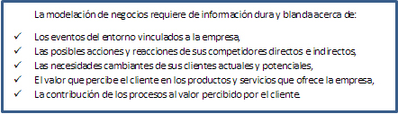
El Octagrama de Valor® es como una lente que permite ver los fenómenos empresariales desde una perspectiva sistémica: convierte los sistemas mecanicistas tradicionales en sistemas orgánicos, con el fin de comprender mejor las relaciones entre sus elementos y captar los ciclos de retroalimentación que normalmente están ocultos en las organizaciones.
El Octagrama de Valor® resalta los factores que crean el valor en los negocios y descubre las fuentes y procesos que permiten capturarlo. Además, facilita la identificación de estrategias para aprovechar mejor los recursos, reducir los gastos y aumentar la rentabilidad de las inversiones.
Tom Peters es famoso por haber ofrecido cien dólares al primer gerente que pudiera demostrar que una estrategia exitosa haya resultado de un proceso de planificación. Obviamente nunca tuvo que pagar porque esto no es posible. Las estrategias pueden planificarse pero no al revés: primero se busca el objetivo y luego se hace el plan para alcanzarlo.
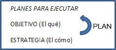
Según Daniel Dennett, un destacado filósofo estadounidense, los seres humanos atribuimos propósitos a todo: a los relojes, a las computadoras y a los seres vivientes. Entendemos a los demás en términos de “hacia dónde pensamos que se dirigen” y no en términos de “dónde pensamos que han estado”. A los agentes causales que aparentemente se mueven por sí mismos en la persecución de un estado futuro o del logro de una meta, les asignamos la propiedad de “buscadores de objetivos”.
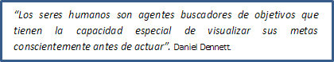
Todas las personas son buscadoras de objetivos y hacen planes para alcanzarlos. La agencia causal se acompaña de necesidades, deseos, planes e intenciones. Detrás de una necesidad siempre hay un deseo de saciarla: “Siento hambre y deseo comida”. El deseo es una imagen que describe las circunstancias futuras de una necesidad ya satisfecha: “un estómago lleno”, y produce en la mente un plan, en este caso para conseguir comida.
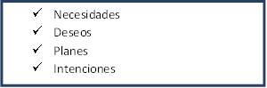
El plan que aparece en la mente con un intervalo significante antes de la acción, consta de una serie de pasos: ir por una escalera, caminar hacia un árbol, colocar la escalera, trepar por ella hasta alcanzar una fruta y comérsela. El plan se confecciona para resolver un conjunto de problemas de forma prospectiva con el fin de realizar el deseo, pero no se ejecuta mientras no aparezca la intención, esto es, la fuerza de voluntad, que motiva la acción.
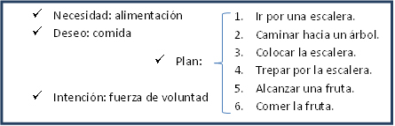
La gente a menudo realiza lo que planea pero los planes conscientes no provocan la conducta en el sentido de que una vez que el plan está listo la conducta ocurre. Se requiere la intención. Los planes sólo preparan el camino, especificando detalladamente cómo actuar y entonces hacen más factible que, cuando se presenten las circunstancias en que la conducta es apropiada, esta conducta se despliegue exitosamente. Son las intenciones que aparecen justo antes de la actuación las que efectivamente provocan la acción, y éstas sólo necesitan aparecer en la conciencia al momento que uno actúa. Estas intenciones son la fuerza de la voluntad.
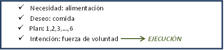
Hay muchos tipos de planes, por ejemplo, un plan de carrera para alcanzar un estatus social, un plan de vida para alcanzar un ideal, un plan de viaje para conocer un lugar, o un plan de negocios para hacer dinero. En todos hay un deseo. Un plan de negocios es un conjunto de actividades que se ha diseñado prospectivamente para hacer dinero. La necesidad de hacer dinero, más el deseo de hacer dinero, más la intención de llevar a cabo el plan mueven a la ejecución del plan. La ejecución del plan resulta en un modelo de negocio que crea valor para el cliente y en el proceso genera dinero para el inversionista.
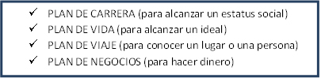
La intención es un elemento esencial de un plan de negocios. Por esto, la fuerza de voluntad es un rasgo importantísimo del carácter que se puede y debe desarrollar. Tener un propósito o un “para qué” que le dé sentido a lo que estamos a punto de hacer y que justifique la acción en términos de costo-beneficio es lo que nos mueve realmente a intentar algo. Los planes guían nuestra conducta y reducen el riesgo de fallar pero sin un propósito que le dé sentido a la acción, no aparece la intención.
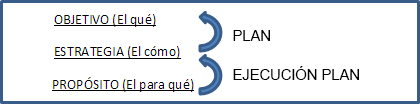
Las intenciones se traducen en acciones siempre y cuando la motivación sea suficientemente grande como para disparar la fuerza de voluntad. Un trabajador que sea muy competente pero que no esté motivado no hará nada por la organización. El paso de un ciclo de planificación del Octagrama de Valor® a uno de ejecución necesita de vitalidad y ésta es una facultad crítica que está en la base del Octagrama Cerebral®.